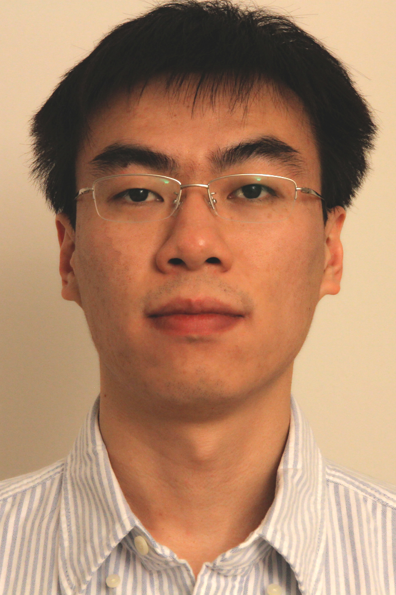

Yunqi Zhang
BBB 2753
Department of Computer Science and Engineering
University of Michigan, Ann Arbor
Ann Arbor, MI 48109
Email: yunqi {at} umich {dot} edu
I am currently a third-year Ph.D student at Department of Computer Science and Engineering,
University of Michigan, Ann Arbor. I am lucky to work in our awesome
Cross-Layer Architecture and Runtimes Laboratory under supervision of Professor
Lingjia Tang and Professor Jason Mars.
Check out my CV and
Google Scholar if you are interested.
Research
- Parallel Computer Architecture
- Energy Efficient Computer Architecture and System
- Datacenter and Warehouse Scale Computer
- Memory System Design and Optimization
- Distributed System
Publications
-
Sirius: An Open End-to-End Voice and Vision Personal Assistant and Its Implications for Future Warehouse Scale Computers
[pdf] [bibtex]
Johann Hauswald, Michael A. Laurenzano, Yunqi Zhang, Cheng Li, Austin Rovinski, Arjun Khurana, Ron Dreslinski, Vinicius Petrucci, Trevor Mudge, Lingjia Tang, and Jason Mars
The 20th International Conference on Architectural Support for Programming Languages and Operating Systems (ASPLOS 2015)
-
Adrenaline: Pinpointing and Reining in Tail Queries with Quick Voltage Boosting
[pdf] [bibtex]
Chang-Hong Hsu, Yunqi Zhang, Michael A. Laurenzano, David Meisner, Thomas Wenisch, Lingjia Tang, Jason Mars, and Ron Dreslinski
The 21st IEEE International Symposium on High Performance Computer Architecture (HPCA 2015)
-
Octopus-Man: QoS-Driven Task Management for Heterogeneous Multicore in Warehouse Scale Computers
[pdf] [bibtex]
Vinicius Petrucci, Michael A. Laurenzano, John Doherty, Yunqi Zhang, Daniel Mosse, Jason Mars, and Lingjia Tang
The 21st IEEE International Symposium on High Performance Computer Architecture (HPCA 2015)
-
SMiTe: Precise QoS Prediction on Real-System SMT Processors to Improve Utilization in Warehouse Scale Computers
[pdf] [bibtex] [slides] [lightning talk slides] [poster]
Yunqi Zhang, Michael A. Laurenzano, Jason Mars, Lingjia Tang
The 47th Annual IEEE/ACM International Symposium on Microarchitecture (MICRO 2014)
-
Protean Code: Achieving Near-Free Online Code Transformations for Warehouse Scale Computers
[pdf] [bibtex]
Michael A. Laurenzano, Yunqi Zhang, Lingjia Tang, and Jason Mars
The 47th Annual IEEE/ACM International Symposium on Microarchitecture (MICRO 2014)
Education
- Ph.D in Computer Science and Engineering, Department of Computer Science and Engineering, University of Michigan, Ann Arbor, Sep. 2013 - Present
- M.S. in Computer Science, Department of Computer Science and Engineering, University of Michigan, Ann Arbor, Sep.2013 - Apr. 2015
- M.S. in Computer Science, Department of Computer Science and Engineering, University of California, San Diego, Sep. 2012 - June. 2013
- B.S. in Software Engineering, School of Software, Beijing Institute of Technology, Sep. 2008 - Jun. 2012
Experience
- Research Collaborator, Facebook, Advising by Dr. David Meisner, Oct. 2014 - Present
- Research Intern, Facebook, Advising by Dr. David Meisner, May. 2014 - Aug. 2014
- Software Engineer Intern, Facebook, Advising by Dr. David Meisner, Jun. 2013 - Oct. 2013
- Graduate Student Researcher, University of California, San Diego, Advising by Prof. Lingjia Tang and Prof. Jason Mars, Sep. 2012 - June. 2013
- Software Engineer Intern, IBM, Advising by Dr. Liang Xue, Nov. 2011 - Jan. 2012
- Research Intern, Institute of Computing Technology, Chinese Academy of Sciences, Advising by Prof. Li Zha, Jul. 2011 - Nov. 2012